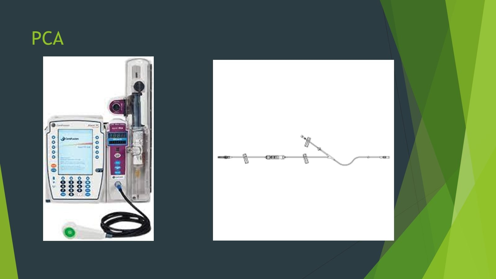

Review · Topic 13
Pain Management
Patient-Controlled Analgesia (PCA)
For further study, see Fundamentals II Week 6 – Pain.
| Setting | What It Does |
|---|---|
| Loading dose |
|
| PCA dose (bolus) |
|
| Lockout interval |
|
| Maximum limit |
|
| Continuous (basal) dose |
|
Nursing Responsibilities for a PCA
- Program the pump with the provider's orders, or the pain team does. A PCA is always IV.
- A naloxone order is a must for every patient with a PCA.
- Pulse ox on almost every PCA patient.
- Y tubing: the PCA joins a carrier IV fluid, usually 0.9% normal saline at a low rate, to push its small doses in.
Only the patient pushes the button. Teach the patient and the family. A family member who pushes it for the patient's pain can cause respiratory depression.
